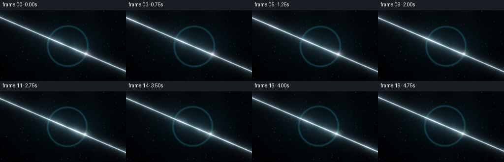
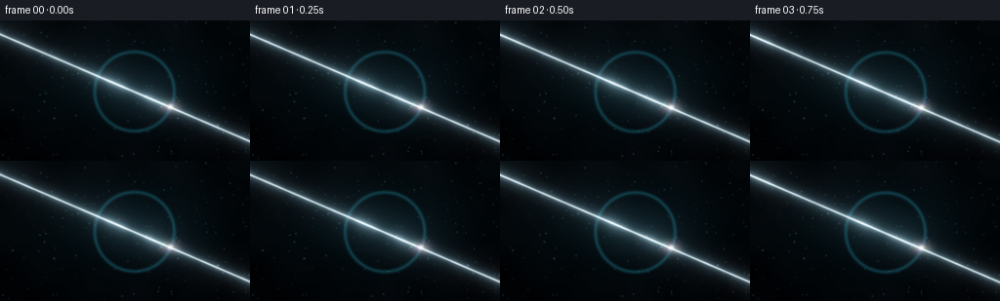

CODING AGENTS AS PIXEL WORLD MODELS
traex/DeepSeek-V4.1-Flash · phygen_090
点击播放 · 原生 RGB 像素
逐轮保存的候选
回放视频、检查图与代码变化。
每份候选均可单独播放。实际图片检查记录在下方工具轨迹中。
候选 01播放与检查图
点击播放 · 原生 RGB 像素


展开代码变化
--- 上一保存版本
+++ 本次保存版本
@@ -0,0 +1,280 @@
+from pathlib import Path
+
+import numpy as np
+from PIL import Image, ImageDraw, ImageFilter
+
+import artifact_io
+
+
+CASE_DIR = Path(__file__).resolve().parent
+WIDTH = 256
+HEIGHT = 144
+FRAMES = 20
+FPS = 4.0
+SS = 4
+
+
+def smoothstep(edge0, edge1, value):
+ value = np.clip((value - edge0) / (edge1 - edge0), 0.0, 1.0)
+ return value * value * (3.0 - 2.0 * value)
+
+
+def bilinear_sample(image, xs, ys):
+ height, width = image.shape[:2]
+ xs = np.clip(xs, 0.0, width - 1.001)
+ ys = np.clip(ys, 0.0, height - 1.001)
+ x0 = np.floor(xs).astype(np.int32)
+ y0 = np.floor(ys).astype(np.int32)
+ x1 = np.minimum(x0 + 1, width - 1)
+ y1 = np.minimum(y0 + 1, height - 1)
+ wx = xs - x0
+ wy = ys - y0
+ if image.ndim == 3:
+ wx = wx[..., None]
+ wy = wy[..., None]
+ top = image[y0, x0] * (1.0 - wx) + image[y0, x1] * wx
+ bottom = image[y1, x0] * (1.0 - wx) + image[y1, x1] * wx
+ return top * (1.0 - wy) + bottom * wy
+
+
+def resize_float(image, size, resample=Image.Resampling.BICUBIC):
+ array = np.asarray(image, dtype=np.float32)
+ if array.ndim == 2:
+ pil = Image.fromarray(array)
+ else:
+ pil = Image.fromarray(np.clip(array * 255.0, 0, 255).astype(np.uint8))
+ pil = pil.resize(size, resample=resample)
+ result = np.asarray(pil, dtype=np.float32)
+ return result if array.ndim == 2 else result / 255.0
+
+
+def blur_float(image, radius):
+ array = np.clip(image, 0.0, 1.0)
+ if array.ndim == 2:
+ pil = Image.fromarray((array * 255.0).astype(np.uint8))
+ else:
+ pil = Image.fromarray((array * 255.0).astype(np.uint8))
+ pil = pil.filter(ImageFilter.GaussianBlur(radius))
+ result = np.asarray(pil, dtype=np.float32) / 255.0
+ return result
+
+
+def make_background():
+ rng = np.random.default_rng(41)
+ low = rng.random((18, 32), dtype=np.float32)
+ low = blur_float(low, 1.8)
+ noise = resize_float(low, (WIDTH, HEIGHT), Image.Resampling.BICUBIC)
+ noise = (noise - noise.mean()) / max(noise.std(), 1e-5)
+
+ yy, xx = np.mgrid[0:HEIGHT, 0:WIDTH].astype(np.float32)
+ xn = xx / (WIDTH - 1)
+ yn = yy / (HEIGHT - 1)
+ r = np.sqrt(((xn - 0.53) * 1.15) ** 2 + ((yn - 0.50) * 0.82) ** 2)
+ vignette = np.clip(1.0 - 0.68 * r**1.7, 0.20, 1.0)
+
+ top = np.array([0.010, 0.023, 0.034], dtype=np.float32)
+ bottom = np.array([0.004, 0.010, 0.018], dtype=np.float32)
+ vertical = np.clip(yn, 0, 1)[..., None]
+ base = top * (1.0 - vertical) + bottom * vertical
+
+ glow = np.exp(-(((xn - 0.53) / 0.34) ** 2 + ((yn - 0.48) / 0.29) ** 2))
+ base += glow[..., None] * np.array([0.010, 0.043, 0.050], dtype=np.float32)
+ base += noise[..., None] * np.array([0.0035, 0.0050, 0.0060], dtype=np.float32)
+ base *= vignette[..., None]
+
+ # A few soft out-of-focus motes give the dark air depth.
+ dust = Image.new("L", (WIDTH * 2, HEIGHT * 2), 0)
+ draw = ImageDraw.Draw(dust)
+ for _ in range(150):
+ x = float(rng.uniform(0, WIDTH * 2))
+ y = float(rng.uniform(0, HEIGHT * 2))
+ brightness = int(rng.integers(22, 90))
+ radius = float(rng.uniform(0.45, 1.35))
+ draw.ellipse((x - radius, y - radius, x + radius, y + radius), fill=brightness)
+ dust = dust.filter(ImageFilter.GaussianBlur(0.55))
+ dust = np.asarray(dust.resize((WIDTH, HEIGHT), Image.Resampling.LANCZOS), dtype=np.float32) / 255.0
+ base += dust[..., None] * np.array([0.23, 0.45, 0.52], dtype=np.float32)
+ return base
+
+
+def make_dust_glints():
+ rng = np.random.default_rng(907)
+ canvas = Image.new("L", (WIDTH * 2, HEIGHT * 2), 0)
+ draw = ImageDraw.Draw(canvas)
+ for _ in range(74):
+ x = float(rng.uniform(0, WIDTH * 2))
+ y = float(rng.uniform(0, HEIGHT * 2))
+ radius = float(rng.uniform(0.5, 1.45))
+ value = int(rng.integers(75, 180))
+ draw.ellipse((x - radius, y - radius, x + radius, y + radius), fill=value)
+ canvas = canvas.filter(ImageFilter.GaussianBlur(0.48))
+ return np.asarray(canvas.resize((WIDTH, HEIGHT), Image.Resampling.LANCZOS), dtype=np.float32) / 255.0
+
+
+def beam_field(xx, yy, cx, cy, frame_phase):
+ slope = 0.43
+ offset = 1.3 * np.sin(frame_phase * 0.48 + 0.35)
+ line_y = cy + slope * (xx - cx) + offset
+ distance = np.abs(yy - line_y) / np.sqrt(1.0 + slope * slope)
+ along = np.clip((xx + 16.0) / (WIDTH + 32.0), -0.08, 1.08)
+
+ pulse_position = -0.10 + 1.16 * ((frame_phase / (2.0 * np.pi)) % 1.0)
+ pulse = np.exp(-0.5 * ((along - pulse_position) / 0.055) ** 2)
+ filament = 0.90 + 0.07 * np.sin(56.0 * along + frame_phase * 1.7)
+ filament += 0.035 * np.sin(131.0 * along - frame_phase * 2.1)
+
+ core = np.exp(-0.5 * (distance / 0.62) ** 2)
+ inner = np.exp(-0.5 * (distance / 2.2) ** 2)
+ halo = np.exp(-0.5 * (distance / 6.0) ** 2)
+ wide = np.exp(-0.5 * (distance / 15.0) ** 2)
+ strength = filament * (1.0 + 0.52 * pulse)
+ return core * strength, inner * strength, halo * strength, wide, distance, along
+
+
+def render_frame(background, dust_glints, frame_index):
+ height = HEIGHT * SS
+ width = WIDTH * SS
+ t = frame_index / (FRAMES - 1)
+ phase = 2.0 * np.pi * t
+
+ yy, xx = np.mgrid[0:height, 0:width].astype(np.float32)
+ xx /= SS
+ yy /= SS
+
+ cx = WIDTH * (0.535 + 0.0075 * np.sin(phase * 0.82 + 0.35))
+ cy = HEIGHT * (0.500 + 0.0105 * np.sin(phase * 0.67 + 0.55))
+ radius = HEIGHT * (0.279 + 0.0038 * np.sin(phase * 0.95 + 1.1))
+
+ bg = resize_float(background, (width, height), Image.Resampling.BICUBIC)
+ dx = (xx - cx) / radius
+ dy = (yy - cy) / radius
+ rho2 = dx * dx + dy * dy
+ rho = np.sqrt(rho2)
+ inside = rho < 1.0
+ z = np.sqrt(np.clip(1.0 - rho2, 0.0, 1.0))
+ theta = np.arctan2(dy, dx)
+
+ # The thin shell bends the background into a softly magnified, rippling lens.
+ lens_scale = 0.91 + 0.27 * rho2
+ ripple_x = 0.014 * np.sin(7.0 * theta + phase * 0.8 + 3.0 * rho)
+ ripple_y = 0.012 * np.cos(5.0 * theta - phase * 0.65 + 2.0 * rho)
+ chromatic = (0.988, 1.000, 1.013)
+ transmitted_channels = []
+ for channel, channel_scale in enumerate(chromatic):
+ sx = cx + dx * radius * lens_scale * channel_scale + ripple_x * radius * rho
+ sy = cy + dy * radius * lens_scale * channel_scale + ripple_y * radius * rho
+ transmitted_channels.append(bilinear_sample(bg[..., channel], sx, sy))
+ transmitted = np.stack(transmitted_channels, axis=-1)
+
+ nx = dx
+ ny = dy
+ # Reflected view vector for a viewer looking along -z.
+ rx = 2.0 * z * nx
+ ry = 2.0 * z * ny
+ rz = 2.0 * z * z - 1.0
+ env_height = np.clip(ry + 0.34, 0.0, 1.0)
+ reflected = np.stack(
+ (
+ 0.010 + 0.070 * env_height,
+ 0.026 + 0.135 * env_height,
+ 0.040 + 0.165 * env_height,
+ ),
+ axis=-1,
+ )
+ horizon = np.exp(-0.5 * ((ry - 0.13) / 0.16) ** 2)
+ reflected += horizon[..., None] * np.array([0.045, 0.155, 0.175], dtype=np.float32)
+ reflected += np.exp(-0.5 * (((rx + 0.55) / 0.34) ** 2 + ((ry + 0.48) / 0.25) ** 2))[..., None] * np.array(
+ [0.10, 0.25, 0.28], dtype=np.float32
+ )
+
+ fresnel = 0.025 + 0.975 * (1.0 - z) ** 5
+ rim = np.exp(-0.5 * ((1.0 - rho) / 0.030) ** 2)
+ rim_outer = np.exp(-0.5 * ((rho - 1.0) / 0.032) ** 2)
+
+ thickness = 305.0
+ thickness += 64.0 * np.sin(4.6 * theta + 2.4 * rho2 + phase * 0.72)
+ thickness += 28.0 * np.sin(10.5 * rho2 - phase * 0.53 + 1.7 * np.sin(3.0 * theta))
+ thickness += 12.0 * np.sin(18.0 * theta + 7.0 * rho)
+ interference = []
+ for wavelength, color_phase in ((640.0, 0.0), (535.0, 2.05), (455.0, 4.10)):
+ optical_phase = 4.0 * np.pi * 1.33 * thickness / wavelength
+ interference.append(0.5 + 0.5 * np.cos(optical_phase + color_phase))
+ film = np.stack(interference, axis=-1)
+ film = 0.20 + 0.80 * film
+
+ light_dir = np.array([-0.52, -0.66, 0.54], dtype=np.float32)
+ light_dir /= np.linalg.norm(light_dir)
+ ndotl = np.clip(nx * light_dir[0] + ny * light_dir[1] + z * light_dir[2], 0.0, 1.0)
+ highlight = 2.6 * ndotl**120 + 0.20 * ndotl**18
+ sheen = 0.5 + 0.5 * np.sin(9.0 * theta + phase * 0.9 + 5.0 * rho)
+
+ surface_alpha = np.clip(0.105 + 0.84 * fresnel + 0.24 * rim, 0.0, 1.0)
+ bubble = transmitted * (1.0 - 0.66 * fresnel[..., None])
+ bubble += reflected * (0.22 + 0.92 * fresnel[..., None])
+ bubble += film * (0.045 + 0.36 * fresnel + 0.16 * rim)[..., None]
+ bubble += (highlight * (0.90 + 0.10 * sheen))[..., None] * np.array(
+ [1.0, 0.98, 0.91], dtype=np.float32
+ )
+ bubble += rim[..., None] * np.array([0.10, 0.35, 0.40], dtype=np.float32)
+
+ image = bg.copy()
+ mask = smoothstep(0.985, 1.012, 1.0 - rho) * inside
+ image = image * (1.0 - mask[..., None] * surface_alpha[..., None])
+ image += bubble * (mask[..., None] * surface_alpha[..., None])
+
+ # The rim glow exists just outside the film and gives the bubble a crisp silhouette.
+ image += rim_outer[..., None] * np.array([0.030, 0.145, 0.175], dtype=np.float32)
+
+ core, inner, halo, wide, beam_distance, beam_along = beam_field(xx, yy, cx, cy, phase)
+ inside_boost = 1.0 + 0.95 * np.exp(-0.5 * ((rho - 0.60) / 0.34) ** 2)
+ beam_color = np.array([0.64, 0.88, 1.00], dtype=np.float32)
+ beam = (1.25 * core + 0.26 * inner + 0.105 * halo + 0.030 * wide) * inside_boost
+ image += beam[..., None] * beam_color
+ image += (0.72 * core)[..., None] * np.array([0.40, 0.22, 0.10], dtype=np.float32)
+
+ # A small, warm-white caustic marks the refracted exit from the soap film.
+ beam_dir = np.array([1.0, 0.43], dtype=np.float32)
+ beam_dir /= np.linalg.norm(beam_dir)
+ exit_x = cx + beam_dir[0] * radius * 0.98
+ exit_y = cy + beam_dir[1] * radius * 0.98
+ caustic = np.exp(-0.5 * (((xx - exit_x) / 1.7) ** 2 + ((yy - exit_y) / 1.4) ** 2))
+ caustic_halo = np.exp(-0.5 * (((xx - exit_x) / 6.0) ** 2 + ((yy - exit_y) / 4.0) ** 2))
+ image += (1.50 * caustic + 0.18 * caustic_halo)[..., None] * np.array(
+ [1.0, 0.94, 0.77], dtype=np.float32
+ )
+ image += caustic_halo[..., None] * film * 0.17
+
+ glints = resize_float(dust_glints, (width, height), Image.Resampling.BICUBIC)
+ glint_pulse = 0.60 + 0.40 * np.sin(phase * 1.3 + 2.5 * beam_along)
+ image += (glints * np.exp(-0.5 * (beam_distance / 5.5) ** 2) * glint_pulse)[..., None] * np.array(
+ [0.48, 0.72, 0.82], dtype=np.float32
+ )
+
+ # A restrained bloom keeps the beam luminous without washing out the soap film.
+ bright = np.clip(image - 0.32, 0.0, 2.2)
+ bloom_small = blur_float(np.clip(bright * 0.75, 0.0, 1.0), 5.0 * SS)
+ bloom_large = blur_float(np.clip(bright * 0.42, 0.0, 1.0), 15.0 * SS)
+ image += 0.22 * bloom_small + 0.17 * bloom_large
+
+ # Gentle exposure roll-off and a touch of fine sensor texture.
+ image = 1.0 - np.exp(-1.20 * np.maximum(image, 0.0))
+ image = np.power(np.clip(image, 0.0, 1.0), 0.92)
+ grain_rng = np.random.default_rng(3000 + frame_index)
+ grain = grain_rng.normal(0.0, 0.006, size=(height, width, 1)).astype(np.float32)
+ image = np.clip(image + grain, 0.0, 1.0)
+
+ pil = Image.fromarray((image * 255.0 + 0.5).astype(np.uint8))
+ pil = pil.resize((WIDTH, HEIGHT), Image.Resampling.LANCZOS)
+ return np.asarray(pil, dtype=np.uint8)
+
+
+def main():
+ background = make_background()
+ dust_glints = make_dust_glints()
+ frames = [render_frame(background, dust_glints, index) for index in range(FRAMES)]
+ artifact_io.save(frames, CASE_DIR)
+ print(f"Saved {FRAMES} frames to {CASE_DIR}")
+
+
+if __name__ == "__main__":
+ main()
可观测工具轨迹
实际执行的命令与返回图片。
命令 1exit 0
/bin/bash -c "pwd && rg --files -g 'prompt.txt' -g 'GENERATION_RULES.md' -g 'task_spec.json' -g '"'!node_modules'"' -g '"'!vendor'"'"
命令 2exit 0
/bin/bash -c 'ls -la'
命令 3exit 0
/bin/bash -c 'cat prompt.txt'
命令 4exit 0
/bin/bash -c 'cat GENERATION_RULES.md'
命令 5exit 0
/bin/bash -c 'cat task_spec.json'
命令 6exit 0
/bin/bash -c "sed -n '1,240p' artifact_io.py"
命令 7exit 1
/bin/bash -c 'python generate.py'
命令 8exit 1
/bin/bash -c 'python generate.py'
命令 9exit 0
/bin/bash -c 'python generate.py'
命令 10exit 0
/bin/bash -c 'ls -lh pixels.npz index.html inspection.png transition_check.png frames/*.png | tail -n 8'
命令 11exit 0
/bin/bash -c "python - <<'PY'
from PIL import Image
import numpy as np
for fn in ['frames/00.png','frames/10.png','frames/19.png']:
a=np.asarray(Image.open(fn)).astype(float)/255
lum=a@[.2126,.7152,.0722]
print('\\n',fn)
chars=' .,:;irsXA253hMHGS#9B&@'
small=np.asarray(Image.fromarray((lum*255).astype('uint8')).resize((64,18)))
for row in small:
print(''.join(chars[min(len(chars)-1,int(v/256*len(chars)))] for v in row))
PY"命令 12exit 0
/bin/bash -c "python - <<'PY'
from PIL import Image
import numpy as np
from pathlib import Path
for p in sorted(Path('frames').glob('*.png')):
a=np.asarray(Image.open(p)).astype(float)/255
lum=a@[.2126,.7152,.0722]
print(p.name, 'mean', round(lum.mean(),3), 'p95', round(np.percentile(lum,95),3), 'max', round(lum.max(),3), 'white%', round((lum>.95).mean()*100,2), 'colors', len(np.unique(a.reshape(-1,3),axis=0)))
PY"命令 13exit 0
/bin/bash -c 'command -v chafa || true; command -v viu || true; command -v img2txt || true; command -v ffmpeg || true'
命令 14exit 0
/bin/bash -c "python - <<'PY'
from PIL import Image
import numpy as np
a=np.asarray(Image.open('frames/10.png').convert('RGB')).astype(float)/255
# crop bubble center 136,72 radius 45
c=a[25:119,89:183]
lum=c@[.2126,.7152,.0722]
chars=' .:-=+*#%@'
for row in np.asarray(Image.fromarray((lum*255).astype('uint8')).resize((72,36),Image.Resampling.BILINEAR)):
print(''.join(chars[min(9,int(v/256*10))] for v in row))
PY"命令 15exit 1
/bin/bash -c "python - <<'PY'
from pathlib import Path
import numpy as np
from PIL import Image
frames=np.stack([np.asarray(Image.open(p)) for p in sorted(Path('frames').glob('*.png'))])
d=np.abs(np.diff(frames.astype(np.int16),axis=0))
print('frame shape/dtype',frames.shape,frames.dtype)
print('interframe mean abs delta',round(float(d.mean()),3),'p99',float(np.percentile(d,99)))
print('changed pixels >2 per step', [round(float((x>2).mean()*100),1) for x in d])
z=np.load('pixels.npz')['pixels']
print('packed shape/dtype',z.shape,z.dtype)
r=(z>>16)&255; g=(z>>8)&255; b=z&255
decoded=np.stack([r,g,b],axis=-1).transpose(2,0,1)
print('packed matches frames',np.array_equal(decoded,frames))
PY"命令 16exit 0
/bin/bash -c "python - <<'PY'
from pathlib import Path
import numpy as np
from PIL import Image
frames=np.stack([np.asarray(Image.open(p)) for p in sorted(Path('frames').glob('*.png'))])
z=np.load('pixels.npz')['pixels']
r=((z>>16)&255).astype(np.uint8); g=((z>>8)&255).astype(np.uint8); b=(z&255).astype(np.uint8)
decoded=np.stack([r,g,b],axis=-1).transpose(2,0,1,3)
print('packed shape/dtype',z.shape,z.dtype)
print('packed matches frames',np.array_equal(decoded,frames))
# Inspect bubble annulus contrast and hue distribution.
for i in (0,10,19):
a=frames[i].astype(float)/255
yy,xx=np.mgrid[:144,:256]
cx=256*(.535+.0075*np.sin(2*np.pi*i/19*.82+.35)); cy=144*(.5+.0105*np.sin(2*np.pi*i/19*.67+.55)); rad=144*(.279+.0038*np.sin(2*np.pi*i/19*.95+1.1))
rho=np.sqrt(((xx-cx)/rad)**2+((yy-cy)/rad)**2)
inner=a[(rho<.97)]
ring=a[(rho>=.97)&(rho<1.03)]
outside=a[(rho>=1.08)&(rho<1.3)]
lum=lambda x: float((x@[.2126,.7152,.0722]).mean())
print(i,'inner',round(lum(inner),3),'ring',round(lum(ring),3),'outside',round(lum(outside),3),'sat',round(float((a.max(2)-a.min(2)).mean()),3))
PY"命令 17exit 0
/bin/bash -c 'python -m py_compile generate.py'
命令 18exit 0
/bin/bash -c "python - <<'PY'
from pathlib import Path
import json, re
p=Path('index.html')
s=p.read_text()
print('index bytes',p.stat().st_size)
print('frames',len(list(Path('frames').glob('*.png'))))
print('deltas',len(re.findall(r'\"deltas\":\\[',s)))
print('caption present','A beam of light passes through a soap bubble.' in s)
print('npz bytes',Path('pixels.npz').stat().st_size)
PY"命令 19exit 0
/bin/bash -c "python - <<'PY'
from PIL import Image
import numpy as np
a=np.asarray(Image.open('frames/10.png')).astype(float)/255
# Show a compact color-letter map of the bubble's central 96x72 area.
c=a[36:108,88:184]
letters=np.array(list('KRGBYCMW'))
for row in c[::3,::3]:
s=''
for px in row:
mx=px.max(); mn=px.min(); sat=mx-mn
if mx<.08: ch=' '
elif mx<.16: ch='.'
elif mx<.25: ch=':'
elif sat<.035: ch='W'
else: ch=letters[[0,1,2,4,5,6][int(np.argmax([px[0],px[1],px[2],(px[0]+px[1])/2,(px[1]+px[2])/2,(px[0]+px[2])/2]))]]
s+=ch
print(s)
PY"命令 20exit 0
/bin/bash -c 'git status --short 2>/dev/null || true'
保存候选 1 份；完成命令 20 次；可验证图片返回 0 张。原始 API 响应与完整日志保留在本地。